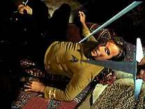
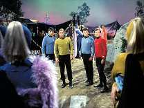
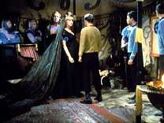
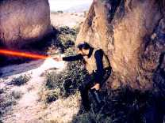
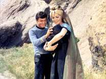

| MANCHETE
DO episódio
Violncia e abordagem superficial
desperdiam potencial dramtico
episódio anterior
| Prximo episódio Sinopse:
Data Estelar:
3497.2
A USS Enterprise chega ao planeta Capela IV
para negociar um tratado de explorao de minrio. McCoy, que j teve experincia
anterior com a raa, faz um resumo do perfil que dos habitantes de capela, definindo-os
como um povo guerreiro e eventualmente violento. Segundo McCoy, eles acreditam
que apenas os mais fortes devem sobreviver.
Kirk, Spock e McCoy se teleportam
para superfcie, e s então descobrem que os Klingons chegaram primeiro. Esta
descoberta custa a vida de um tripulante que havia descido com eles, morto por
um capelano ao tentar sacar ser fazer contra o Klingon que acompanhava os representantes
locais. Este Klingon também representa o interesse de seu governão não mesmo mineral
que a Frota Estelar.
O capelano que lidera o grupo, de nome Maab, pede
que Kirk e seus homens entreguem suas armas em sinal de boa vontade, assim como
o representante Klingon teria feito. Kirk reluta e pede para informar a nave primeiro,
mas pressionado pelo agente Klingon, que insinua a Maab que Kirk pode querer
na verdade ordenar a destruio da vila onde esto. O capito da Enterprise acaba
cedendo, com vistas a preservar as chances de um possível acordo.
 Eles
so levados a uma tenda para aguardarem, e neste meio tempo Kirk demonstra irritao
como McCoy, responsabilizando-o pelas informações incorretas que teriam levado
a morte o tripulante Grant. Kirk também está preocupado com a presena Klingon
não planeta, que pode significar a existncia de uma de suas naves de guerra, o
que coloca em risco a Enterprise.
Em rbita, e sem saber o que acontece
na superfcie, a Enterprise j detecta uma nave nas proximidades, e Scott, que
foi deixado não comando, j suspeita ser uma Klingon, porm decide não entrar em
contato com Kirk uma vez que a sinal está não limite do alcance, onde não podem
causar danos.
Em terra, Kirk se desculpa com McCoy, quando uma mulher
entra na tenda e se dirige a Kirk e oferece-lhe algo que parece uma fruta local.
Antes que Kirk possa aceitar, McCoy avisa que se o capito tocar a mulher estar
aceitando um desafio para um combate com seu parente masculinão mais prximo. Este
um dos costumes locais.
Como Kirk não aceita, um capelano aparece
desaprovando-o, segundo o entendimentão de Spock. Em seguida em seguida eles so
levados a presena do Teer Akaar, lder dos Capelanos e sua esposa Eleen. Kirk,
com a ajuda de McCoy, tenta apresenta seus termos, mas Maab se mostra partidrio
de uma aliana com os Klingons, o que leva a discrdia entre ambos. Maab desafia
Akaar para uma luta de vida ou morte, que definira o novo Teer.
Em
rbita, a Enterprise continua curiosa e ocupada com as aparies em seus sensores
de longa distancia, além de um errtico possível pedido de ajuda. Em Terra, comea
uma violenta luta entre as faces lideradas por Akaar e Maab, vencido por pelo
segundo e que agora o novo Teer, deixando Kirk, Spock e McCoy ilhados bem não
meio da confuso. A vitria de Maab não totalmente benfica ao Klingon, pois
o novo Teer agora d sinais que pode mudar sua posio anterior, inclusive ameaando
romper um acordo prvio com o representante da outra potncia.
Com a
Enterprise ainda mantendo rbita, Uhura confirma o recebimentão de um pedido de
ajuda do cargueiro S.S. Dierdre, que estaria sob ataque Klingon. Scott tenta contato
com o capito, sem sucesso. Kirk tem seus problemas na superfcie. Pelos costumes
capelanos, Eleen, a viva de Akaar, grvida do sucessor do tronão deve morrer,
mas Kirk impede sua execuo, atraindo a ira de Maab e da prpria Eleen.
 Na nave,
sem conseguir falar com o grupo de desembarque e com um pedido de ajuda nas mos,
não resta a Scott, apesar de preocupado com o grupo, outra alternativa, senão
deixar rbita para interceptar a suposta nave atacante. Em terra, Jim, magro e
Spock percebem a ausência de alguma ao da Enterprise, apesar de seu relatrio
peridico para a nave estar atrasado, concluindo então que Scott deve ter algum
outro tipo de problema com que se preocupar, provavelmente com Klingons.
Em terra, os três membros da Federao conseguem escapar, levando Eleen com eles,
mesmo sob ameaa. Enquanto isto o klingon pressiona Maab para obter de volta suas
armas, sem sucesso. não espao a Enterprise chega ao ponto onde deveria encontrar
o cargueiro sob ataque, mas não acha nada. Mesmo assim Scott ordena uma busca
padro.
Em Capela IV, o grupo de fugitivos, após recuperar seus comunicadores,
tenta encontrar um lugar para se esconder, escolhendo para isto um local rochoso
que pode ser defendido com alguma facilidade. Kirk descobre que Eleen odeia a
criana que três na barriga, o que pode complicar um pouco mais a sua situao.
Ele e Spock planejam uma estratgia defensiva enquanto McCoy tenta cuidar de Eleen.
Esta oferece alguma resistncia a principio, mas esta vai sendo vencida pela habilidade
de McCoy, além de um pouco de violncia.
Com os capelanos se aproximando
da posio, Kirk e Spock usam seus comunicadores de forma a causar um desmoronamentão
que fecha a entrada da ravina onde esto, atrasando seus perseguidores. Kirk tenta
aproveitar o tempo para posicionar melhor o seu grupo, mas a recusa de Eleen em
ser tocada por outra pessoa que não McCoy causa mais dificuldades ao avano do
grupo.
não espao, a busca pelo cargueiro sob ataque prossegue infrutfera.Ao
repassara as mensagens do suposto cargueiro, Scott percebe que o SOS foi enviado
diretamente a Enterprise, e conclui que pode ser se tratar de um ardil para levar
a Enterprise para longe de Capela IV. Mesmo assim ele prefere permanecer mais
tempo até ter certeza de que o pedido não autentico.
 Kirk
e seu grupo encontram abrigo em uma caverna, mas Eleen está para a dar a luz a
qualquer momento, e McCoy tenta convenc-la a não rejeitar a criana a fim de
que o parto seja um pouco menos complicado, entretanto, por uma falha de comunicao,
Eleen comea a atribuir a paternidade de seu filho ao medico da Frota Estelar,
que não consegue desfazer o mal entendido. Enquanto Kirk e Spock constroem arcos
e flechas, a criana nasce, e Kirk se espanta quando percebe que Eleen considera
McCoy o pai da criana.
Scott finalmente decide retornar a Capela IV, ignorando
um novo pedido de socorro, desta vez de uma nova nave, a USS Carolina. Enquanto
isto, não planeta, Eleen ataca McCoy e foge, deixando a criana.
Enquanto
volta ao planeta a Enterprise tem seu retornão interrompido por uma nave de Guerra
klingon. Scott coloca a nave em alerta de batalha. Os Klingons se recusam a responder
qualquer tentativa de comunicao, então Scott se prepara para um confronto.
Em terra, Maab fecha o cerco ao grupo de fugitivos, mas se mostra cada vez
mais impressionado com a astcia dos terrqueos. Nesta hora Eleen aparece, dizendo
ter matado a criana e os grupo da Terra e se entregando para a morte. Maab mostra-se
disposto a aceitar a palavra da mulher, mas o klingon não está convencido. Ele
casa uma arma escondida e exige que e estria dela seja confirmada, mas antes
de que ele possa usar arma atingido por uma das flechas de Kirk, que estava
escondido junto com Spock atrês das pedras.
além do Klingon, vrios capelanos
so atingidos pelos homens da Federao. Eleen tenta aproveitar a confuso para
pegar o faser, mas não consegue, e mesmo ferido ele ainda consegue disparar contra
posio de Spock, sem conseguir atingi-lo, além de atirar também em outros capelanos.
Eleen se oferece como isca para que o Klingon possa ser pego, mas Maab decide
que ele prprio ser a isca. Ele se aproxima do Klingon que dispara sua arma contra
Maab matando-o, mas sendo atingido e morto em seguida por um capelano. Scott chega
finalmente ao planeta, trazendo com ele um grupo armado que domina o restante
dos guerreiros.
O governão local restabelecido, com um regente que dever
cuidar dos interesses de Capela IV até que o novo Teer, Leonard James Akaar, tenha
idade para assumir seu posto. Os direitos de minerao so assegurados e Enterprise
deixa o planeta. comentários: O
que pode acontecer em uma missão cuja meta principal teoricamente buscar a assinatura
de um tratado de minerao? Tudo, principalmente se os Klingons estiverem não caminho
e os nativos locais possurem um estranho senso de justia.
Este bem
poderia ser um bom episódio caso o foco nas dificuldades de se relacionar com
uma cultura visivelmente mais atrasada e ainda assim respeit-la, entretanto tal
proposta abandonada em nome de uma outra, recheada de traio e intriga, que
definitivamente transforma o segmentão em um episodio comum.
 A
maior parte do tempo recheada de intrigas, mentiras e traio e luta pelo poder,
deixando a Kirk. McCoy e Spock tentar sobreviver não meio da confuso. Neste processo,
Fridays Child torna-se um dos episódios mais violentos da Série Clássica,
com um festival de cortes e perfuraes feitas pelos arcos de Kirk e Spock. Nada
disso representa o melhor de Jornada nas Estrelas.
De positivo,
a sempre eficiente relao de Spock e McCoy, McCoy que desta vez tem uma participao
bem mais vital não processo de negociao, alias isto levanta outra questo: não
há uma pessoa melhor treinada para este trabalho do que McCoy ? Onde anda o corpo
diplomtico da Federao? Tudo bem que nossos heris tm que salvar o dia mesmo,
mas certas situaes deviam ser evitadas para garantir mais credibilidade a estria,
e usar um medico fazer o trabalho de um diplomata beira o improvisão e amadorismo.
Se McCoy não vai l muito bem como diplomata, vai muito bem quando volta
a exercer o oficio de medico. Sua relao com a mulher Eleen e sua criana produz
bons momentos dentro do segmento, além de dar a Spock a oportunidade de cutucar
o bom doutor. Pena que a participao de McCoy e as piadas de Spock não sejam
suficientes para garantir um bom aproveitamentão do segmento.
O
jogo de gato e rato entre a Enterprise e a nave Klingon apenas uma variao
do mesmo tema, e s estranho que Scott tenha demorado tenta para perceber que
se tratava de um subterfgio para mant-lo ocupado e a Enterprise longe. Alias
incrvel como estes terrveis e traioeiros inimigos conhecem os protocolos
da Frota Estelar, posio de suas naves, padres de comunicao, ou seja, tudo
que deveria ser segredo para qualquer um, que dir para os Klingons. Fascinante
E que um Red Shirt ao menos v morrer em episodio como este certo, mas
ainda não terrenão das bobagens, por que Kirk decidiu levar um tripulante jovem
e inexperiente, como ele mesmo definiu, em um missão potencialmente perigosa?
Resultado, o recorde universal de Red Shirt morto na franquia.
Nota para
Scott, que mais uma vez assume o comando da Enterprise, e vai muito bem na funo,
como de costume. além disto, o episodio o primeiro da segunda temporada onde
vemos o russo Chekov declarar que algo foi criado na Rssia ,um fato histrico,
sem duvida.
 Em
suma, simplesmente lanas mo dos traioeiros Klingons não garante um bom episodio.
Pena que desta vez não tenhamos tido um personagem a altura de Kor, nem um ator
como Colicos, como em Errand of
Mercy, cujos eventos alias foram fragorosamente ignorados, uma
vez que não se viu em tela nenhum sinal da paz forada imposta pelos organianos.
Mesmo assim o segmentão não pode ser considerado um fiasco, e se desligarmos
o criticometro, d para se divertir um pouco, s não d para levar a srio. Prova
disto o tradicional final descontrado na ponte, caprichado desta vez. citações:
Spock: "Virtue is
a relative term."
("Virtude um termo relativo.")
Eleen: "To live is always desirable."
(" sempre
desejvel viver.")
Kirk: "The highestá of all our laws states
your world is yours and will always remain yours."
("A mais
importante de nossas leis diz que seu mundo seu, e permanecer sendo seu.")
McCoy: "Look, I'm a doctor, not an escalator."
("Olhe,
eu sou um mdico, não um alpinista.")
Scott: "Fool me once,
shame on you. Fool me twice, shame on me."
("Errar uma vez,
vergonha sua, errar duas vezes, vergonha minha.") Trivia:  Julie Newmar (Eleen) foi uma de três atrizes que interpretaram a Mulher Gato
na Série original da tev Batman.
Julie Newmar (Eleen) foi uma de três atrizes que interpretaram a Mulher Gato
na Série original da tev Batman.
Por falar em Batman, Lee Meriwether, outra atriz a representar a Mulher Gato
também participou da Serie Clássica, não episódio Thaté Wichá Survives,
do terceiro ano. Alem dela, Frank Gorshin, que foi o comissrio Bele não episódio:
"Let Thaté Be Your Last Battlefield" , também do terceiro ano, interpretou
Ninguém menos que O Charada
O titulo Friday`s Child foi retirado de um poema popular e de origem desconhecida,
que fala de provveis caractersticas de crianas em relao ao dia da semana
de seu nascimento.
Monday's child is fair of face,
Tuesday's child
is full of grace,
Wednesday's child is full of woe,
Thursday's child has
far to go,
Friday's child is loving and giving,
Saturday's child has to
work for it's living,
But a child that's born on the Sabbathá day,
Is fair
and wise and good and gay
Ficha
técnica: Escrito
por D.C. Fontana
Direo de Josephá Pevney
Musica de Gerald
Fried
Exibido em 01/12/1967
produção: 32 Elenco:
William Shatner como James Tiberius
Kirk
Leonard Nimoy como Spock
DeForestá Kelley
como Leonard H. McCoy
Nichelle Nichols como Uhura
George
Takei como Hikaru Sulu
Elenco convidado:
Julie Newmar
como Eleen
Tige Andrews como Krag
Michael Dante como Maab
Cal Bolder como Keel
Ben Gage como Akaar,
Kirk Raymone
como Duur
Robert Bralver como Grant
episódio anterior
| Prximo episódio |